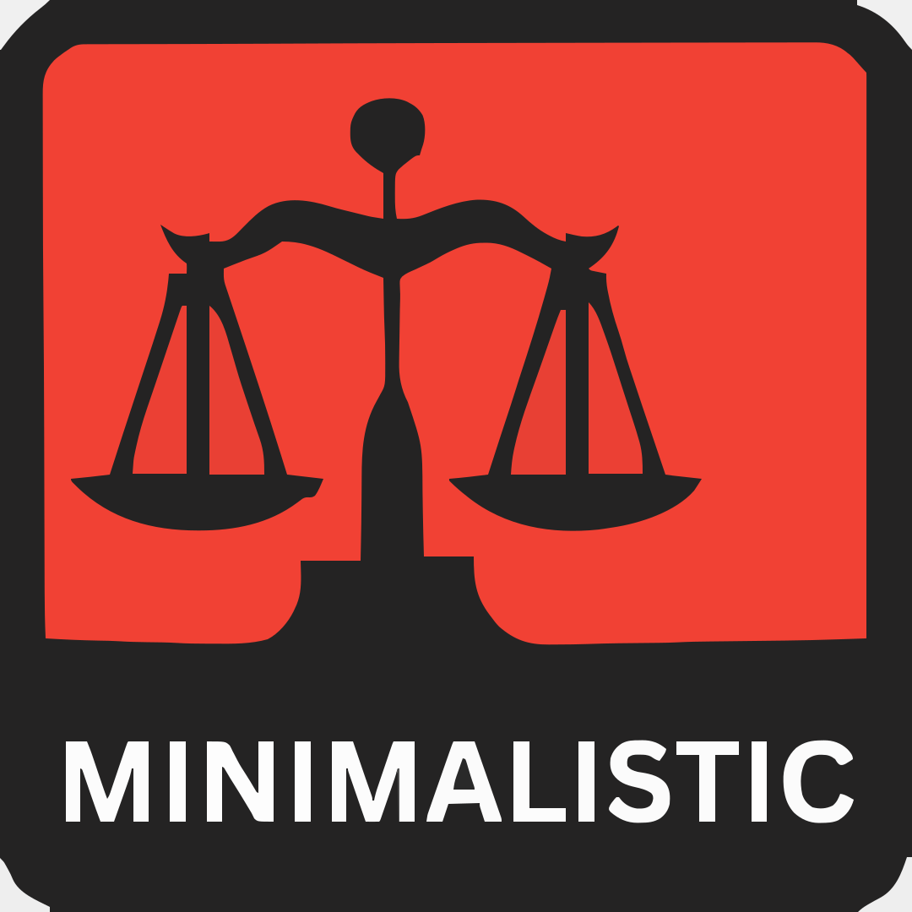
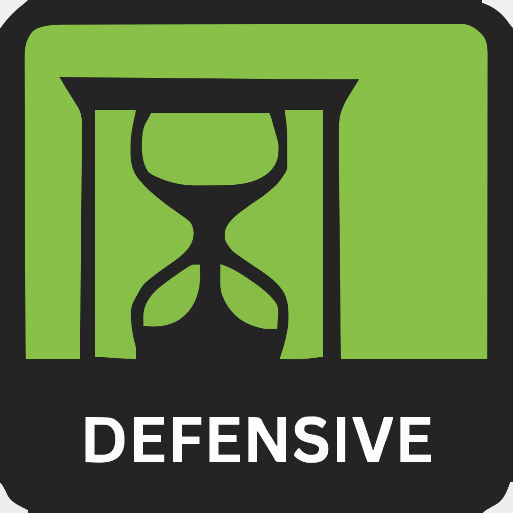
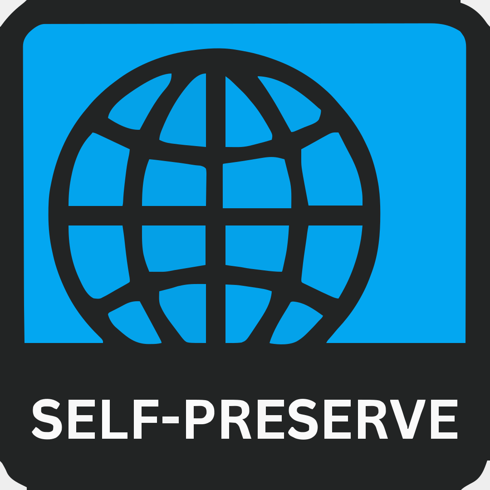
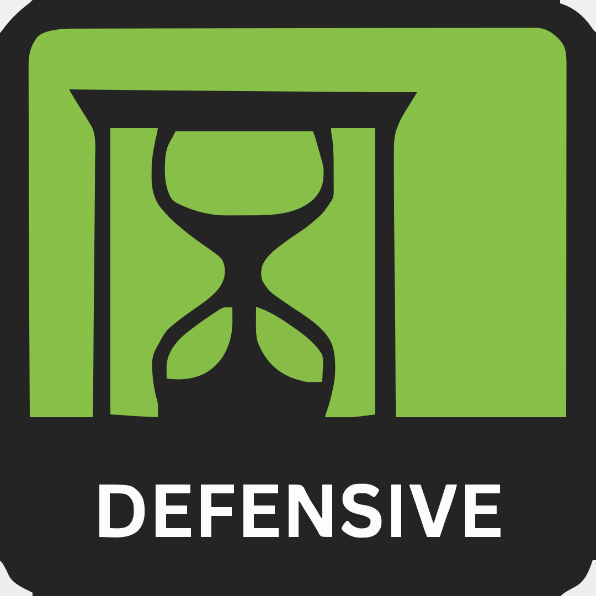
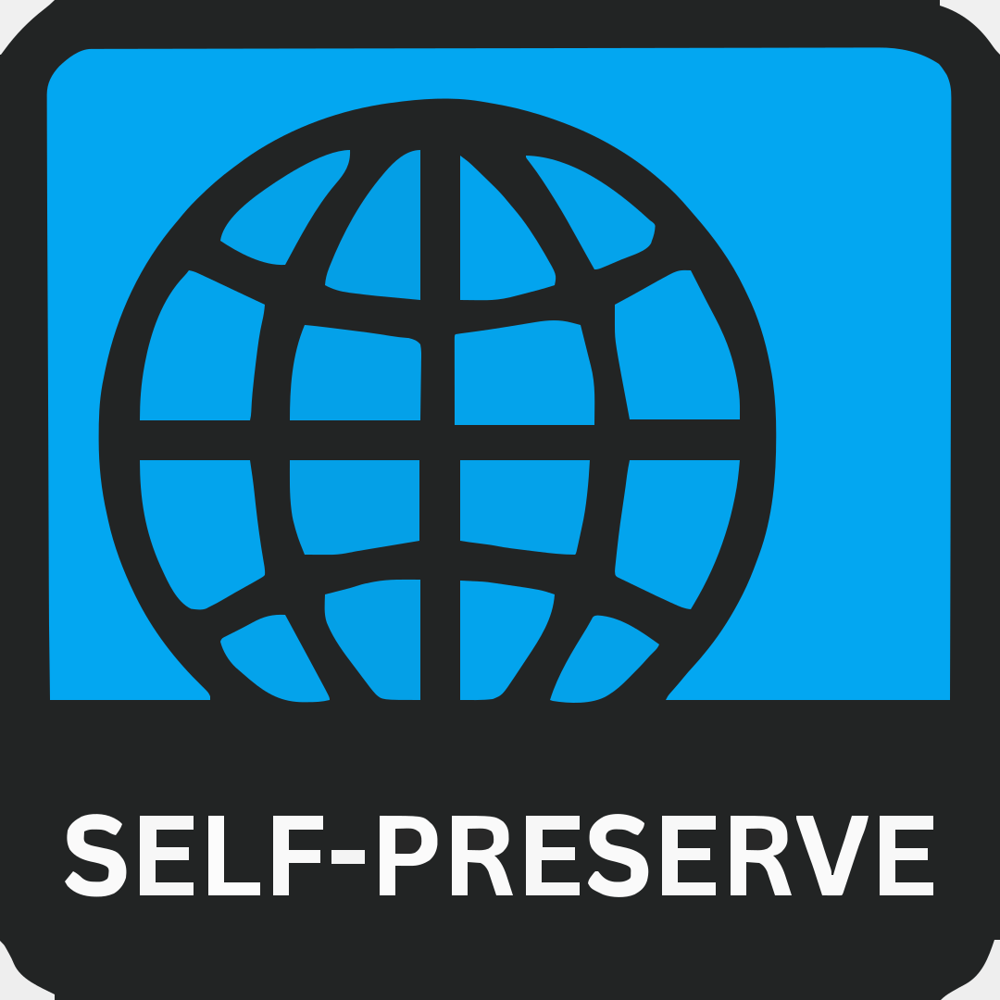
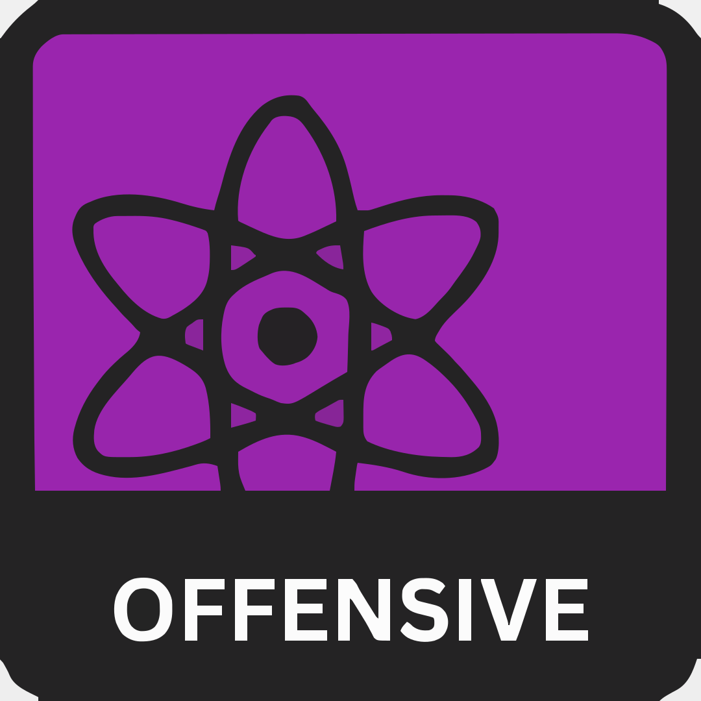
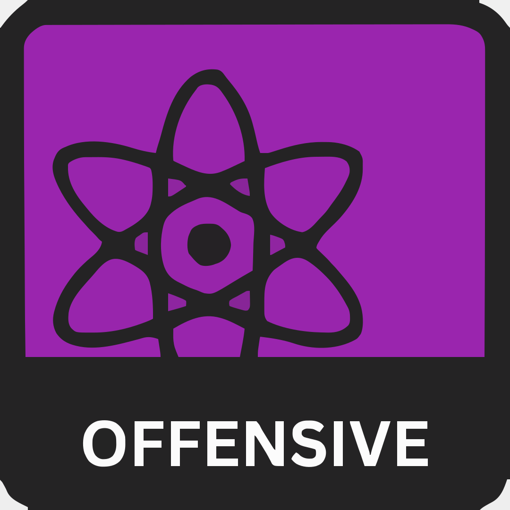

SUPPLY
PEOPLE
SOCIETY
ZOMBIES

 



 

zombie 8values is an apocalyptic spin on a political quiz that attempts to assign percentages for eight different scenario values. You will be presented by a statement, and then you will answer with your opinion on the statement from Strongly Agree to Strongly Disagree, with each answer slightly affecting your scores. At the end of the quiz, your answers will be compared to the maximum possible for each value, thus giving you a percentage. Answer honestly!
Please note this is not the original political 8values quiz! I've reverse-engineered the original test even though I have no coding background, so that's why it look very similar!
There are currently questions in the test.
There are four independent axes - Supply, People, Society, and Zombies - and each has two opposing values assigned to them. They are:
MINIMALIST
Those with higher Minimalist scores believe that less is more. They prioritise the necessary items to keep and push luxury aside. Though not always, they tend to be free wayfarers and value managing themselves.
SUPPLY
HOARDING
Those with higher Hoarding scores believe that more is better. They value a surplus of items and allow indulgence in luxuries. Though not always, they tend to stick to shelters and value sharing items.
ALTRUISTIC
Those with higher Altruistic scores believe in the advantage of more humans. They value utilitarian efforts and are more inclined to help strangers. At high values, they prioritise others survival over their own.
PEOPLE
SELF-PRESERVING
Those with higher Preserving scores believe in minimising human-made risk. They value people’s skill-sets and are more inclined to distrust strangers. At high values, they prioritise their own survival over others.
LIBERTY
Those with higher Liberty scores value an even playing field in the apocalypse. They value independent decisions, and avoid personal intervention. Though not always, they may trade in security for their own freedom. At high levels, they prefer small groups to larger groups.
SOCIETY
AUTHORITY
Those with higher Authority scores value the need for hierarchy in the apocalypse. They value abiding rules, and intervention into people’s actions. Though not always, they may trade in control for security. At high levels, they prefer large groups over small groups.
DEFENSE
Those with higher Defence scores tend to avoid zombies. They minimise resource wastage and outside interaction, preferring distance from any zombie hot spots. They may be more likely to run from zombies.
ZOMBIES
OFFENSE
Those with higher Offense scores tend to attack zombies. They support active efforts of zombie erasure and reclaiming as much territory as possible for human safety. They may be more willing to fight zombies.
Taditional zombies!
The zombies are slow walkers that react to sound and group up in hoards over time. Their skin rots, and the muscles are weakened, but their bones still hold up. They will normally emit grumbling sounds unless dormant (a state of ‘sleep’ or ‘giving up’ after being unable to move while active, ends upon agitation). There are chances they will still move until their brain is damaged enough. The grumbling sound of a zombie will become more aggressive when they are consuming or hunting ‘food’. Zombies do NOT get tired and will attempt to chase someone unreasonably until a short time after they lose the presence of the person, (a small amount of object permanence, just with no deduction skills). It is unsure if there is a way for them to starve or die out naturally, and there is no current cure. One bite is infectious and will turn someone in an undetermined amount of days.
Consider the FIRST 3 MONTHS of the apocalypse for this quiz.